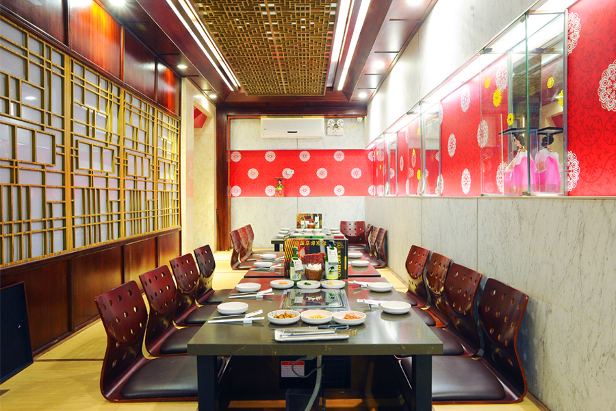

TPCG-Food ALACARTE (GỌI MÓN)
TPCG-Food là mô hình phục vụ các món ăn gọi riêng lẻ theo nhu cầu. Mỗi món tương ứng với giá tiền khác nhau. King BBQ mô hình gọi món, với thực đơn đa dạng hơn 200 món ăn cùng các set bộ và combo dành cho 2-4 người với mức giá hợp lý. Món sườn King là món ăn đặc trưng và rất nổi tiếng mà bất cứ thực khách nào đến King BBQ cũng không thể bỏ qua.
TPCG-Food là điểm đến cho các khách hàng có nhu cầu tiếp khách, tụ tập bạn bè, gia đình, liên hoan sinh nhật.
TPCG-Food ALACARTE (Đặt bàn)

TPCG-Food là mô hình Buffet tự chọn ăn không giới hạn trong một mức giá cố định, có Line Buffet để quý khách lựa chọn món ăn. Quý khách có thể bắt đầu bằng các món soup, kimchi salad, món nóng, món cổ truyền, các món thịt tẩm sốt Hàn Quốc nướng trên than hồng, và kết thúc với món tráng miệng. Thực đơn Buffet hơn 200 món ăn đa dạng đặc trưng hương vị Hàn Quốc.
TPCG-Food đặc biệt thích hợp với khách hàng có nhu cầu tổ chức liên hoan sinh nhật, khách đoàn và gia đình.